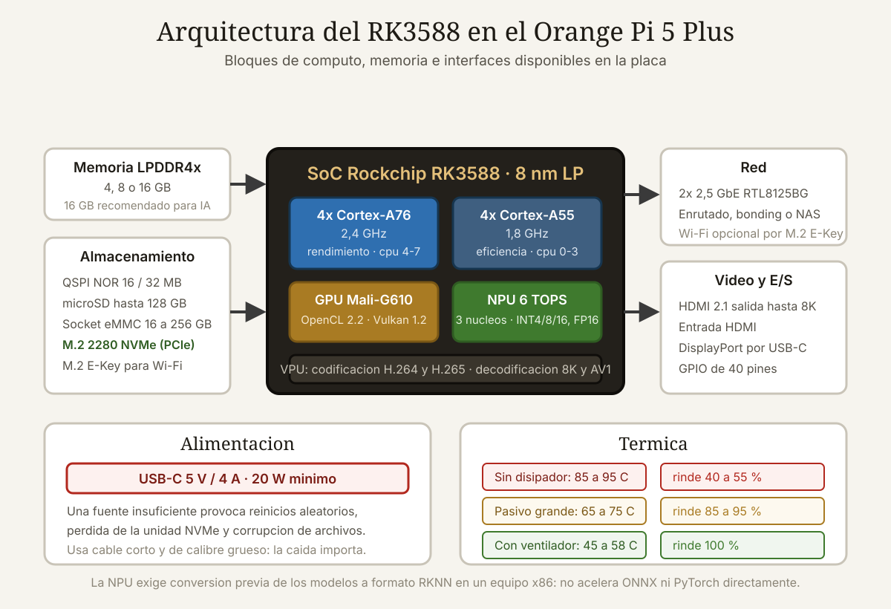

Qué cubre esta guía
Qué hay dentro de la placa
El Orange Pi 5 Plus se construye alrededor del Rockchip RK3588, un SoC fabricado en 8 nm que en 2022 marcó un salto generacional en el mundo ARM asequible y que en 2026 sigue siendo la referencia de potencia bruta en placas de menos de doscientos dólares.
| Componente | Especificación |
|---|---|
| SoC | Rockchip RK3588, proceso de 8 nm LP |
| CPU | 4× Cortex-A76 @ 2,4 GHz + 4× Cortex-A55 @ 1,8 GHz (big.LITTLE) |
| GPU | Mali-G610 MP4 — OpenGL ES 1.1/2.0/3.2, OpenCL 2.2, Vulkan 1.2 |
| NPU | 6 TOPS, soporte INT4, INT8, INT16 y FP16 |
| Memoria | 4, 8 o 16 GB LPDDR4/LPDDR4x |
| PMU | RK806-1 |
| Almacenamiento | QSPI NOR de 16/32 MB, microSD hasta 128 GB, socket eMMC de 16 a 256 GB, M.2 2280 NVMe (PCIe), M.2 E-Key |
| Red | 2× 2,5 GbE con controladores RTL8125BG |
| Vídeo | HDMI 2.1 con salida hasta 8K, entrada HDMI, DisplayPort por USB-C |
| GPIO | Cabecera de 40 pines |
| Alimentación | USB-C 5 V / 4 A |
| Dimensiones | 100 × 75 mm, 86,5 g |
| Sistemas operativos | Orange Pi OS, Android 12, Debian 11, Ubuntu 22.04 |
La arquitectura big.LITTLE en la práctica
Los ocho núcleos no son iguales. Los cuatro Cortex-A76 hacen el trabajo pesado y los cuatro Cortex-A55 se ocupan de las tareas de fondo con una fracción del consumo. El planificador de Linux reparte automáticamente, pero en cargas críticas conviene anclar procesos manualmente:
# Los nucleos 0-3 son A55 (eficiencia), los 4-7 son A76 (rendimiento)
# Anclar un proceso de inferencia a los nucleos rapidos
taskset -c 4,5,6,7 python3 inferencia.py
# Comprobar la frecuencia actual de cada cluster
cat /sys/devices/system/cpu/cpufreq/policy0/scaling_cur_freq # A55
cat /sys/devices/system/cpu/cpufreq/policy4/scaling_cur_freq # A76
# Fijar el gobernador en rendimiento para benchmarks reproducibles
for p in /sys/devices/system/cpu/cpufreq/policy*; do
echo performance | sudo tee $p/scaling_governor
doneRendimiento real medido
Las cifras que siguen son órdenes de magnitud representativos obtenidos con Ubuntu 22.04, gobernador en modo rendimiento y disipación activa. Los resultados concretos varían con la versión del núcleo y la temperatura ambiente.
| Prueba | Orange Pi 5 Plus | Raspberry Pi 5 (8 GB) | Ventaja |
|---|---|---|---|
| Núcleos / frecuencia | 8 / 2,4 GHz máx. | 4 / 2,4 GHz | Orange Pi |
| Cómputo multihilo | Referencia 100 % | ~55 a 65 % | Orange Pi |
| Cómputo monohilo | Referencia 100 % | ~95 a 105 % | Empate |
| Compilación de núcleo Linux | Referencia | ~1,7× más lento | Orange Pi |
| Red máxima | 2× 2.500 Mbit/s | 1× 1.000 Mbit/s | Orange Pi |
| NVMe | M.2 2280 nativo | PCIe con adaptador HAT | Orange Pi |
| NPU | 6 TOPS integrada | Ninguna | Orange Pi |
| Madurez del software | Media | Muy alta | Raspberry Pi |
| Documentación y comunidad | Limitada | Enorme | Raspberry Pi |
| Consumo en reposo | 3 a 4 W | 2,5 a 3 W | Raspberry Pi |
| Consumo con carga máxima | 12 a 16 W | 8 a 10 W | Raspberry Pi |
Almacenamiento: la diferencia más tangible
Instalar el sistema en una unidad NVMe transforma la experiencia de uso más que cualquier otra mejora. La ranura M.2 2280 acepta unidades estándar y no requiere adaptadores.
| Medio | Lectura secuencial típica | Escritura | Sensación de uso |
|---|---|---|---|
| microSD clase A1 | 25 a 45 MB/s | 10 a 20 MB/s | Lenta, cuello de botella evidente |
| microSD A2 de calidad | 80 a 100 MB/s | 50 a 80 MB/s | Aceptable |
| eMMC en socket | 150 a 300 MB/s | 100 a 200 MB/s | Buena |
| NVMe M.2 | 700 a 1.500 MB/s | 600 a 1.200 MB/s | Como un ordenador de sobremesa |
La NPU de 6 TOPS: promesa y realidad
La unidad de procesamiento neuronal es el argumento diferencial del RK3588 y, a la vez, la parte que más trabajo de integración exige. No es un acelerador que funcione por arte de magia: hay que convertir explícitamente los modelos al formato propietario RKNN.
Flujo de trabajo completo
- Entrenar o descargar el modelo en PyTorch, TensorFlow u ONNX en un PC.
- Convertir a RKNN con el
rknn-toolkit2en un equipo x86 con Linux. Este paso no se hace en la propia placa. - Cuantizar a INT8 aportando un conjunto representativo de imágenes de calibración.
- Desplegar el archivo
.rknnen la placa y ejecutarlo conrknn-toolkit-lite2o la librería en C.
# En el PC x86: conversion de ONNX a RKNN
from rknn.api import RKNN
rknn = RKNN(verbose=True)
rknn.config(
mean_values=[[0, 0, 0]],
std_values=[[255, 255, 255]],
target_platform='rk3588'
)
rknn.load_onnx(model='yolov8n.onnx')
rknn.build(do_quantization=True, dataset='./calibracion.txt')
rknn.export_rknn('./yolov8n.rknn')
rknn.release()# En la Orange Pi 5 Plus: inferencia
from rknnlite.api import RKNNLite
import cv2, numpy as np
rknn = RKNNLite()
rknn.load_rknn('./yolov8n.rknn')
# NPU_CORE_0_1_2 reparte la carga entre los tres nucleos de la NPU
rknn.init_runtime(core_mask=RKNNLite.NPU_CORE_0_1_2)
frame = cv2.imread('entrada.jpg')
img = cv2.resize(frame, (640, 640))
img = cv2.cvtColor(img, cv2.COLOR_BGR2RGB)
salidas = rknn.inference(inputs=[np.expand_dims(img, 0)])
rknn.release()| Modelo | Resolución | CPU sola | Con NPU (INT8) | Mejora |
|---|---|---|---|---|
| YOLOv8n | 640 × 640 | 2 a 4 fps | 25 a 40 fps | ~10× |
| YOLOv5s | 640 × 640 | 1 a 3 fps | 18 a 30 fps | ~10× |
| MobileNetV2 | 224 × 224 | 25 a 35 fps | 180 a 250 fps | ~7× |
| ResNet-50 | 224 × 224 | 5 a 8 fps | 50 a 70 fps | ~9× |
| Segmentación ligera | 512 × 512 | 1 a 2 fps | 10 a 15 fps | ~8× |
Los tres núcleos de la NPU
Los 6 TOPS se reparten en tres núcleos de 2 TOPS. Puedes ejecutar tres modelos distintos en paralelo, uno por núcleo, o repartir un solo modelo entre los tres. Para procesar varias cámaras simultáneamente, la primera estrategia suele dar mejor rendimiento agregado.
Térmica y alimentación
El RK3588 disipa una potencia considerable para un SoC ARM. Sin refrigeración adecuada, el thermal throttling reduce el rendimiento sostenido de forma drástica y todas las cifras del apartado anterior se vuelven inalcanzables.
| Refrigeración | Temp. en carga | Rendimiento sostenido | Ruido |
|---|---|---|---|
| Sin disipador | 85 a 95 °C | 40 a 55 % | Nulo |
| Disipador pasivo pequeño | 75 a 85 °C | 65 a 80 % | Nulo |
| Disipador pasivo grande | 65 a 75 °C | 85 a 95 % | Nulo |
| Disipador con ventilador | 45 a 58 °C | 100 % | Bajo |
| Carcasa metálica completa | 50 a 62 °C | 95 a 100 % | Nulo |
# Vigilar temperatura y frecuencias en tiempo real
watch -n 1 'echo "Temp: $(($(cat /sys/class/thermal/thermal_zone0/temp)/1000)) C"; \
for p in /sys/devices/system/cpu/cpufreq/policy*; do \
echo "$(basename $p): $(($(cat $p/scaling_cur_freq)/1000)) MHz"; done'Consumo por escenario
| Escenario | Consumo | Consumo mensual continuo |
|---|---|---|
| Reposo, sin periféricos | 3 a 4 W | ~2,5 kWh |
| Servidor ligero con NVMe | 6 a 8 W | ~5 kWh |
| Inferencia continua en NPU | 10 a 13 W | ~8 kWh |
| Carga máxima en los 8 núcleos | 14 a 16 W | ~11 kWh |
El estado real del software
Aquí está el verdadero coste oculto de la placa, y conviene decirlo sin rodeos: el hardware supera al software. Es la diferencia esencial frente al ecosistema Raspberry Pi.
| Aspecto | Situación |
|---|---|
| Imágenes oficiales de Orange Pi | Funcionan, pero con núcleos vendor antiguos y actualizaciones esporádicas |
| Armbian | La opción más recomendable: mejor mantenida y con comunidad activa |
| Núcleo mainline | Soporte creciente, pero aún incompleto en aceleración de vídeo y algunos periféricos |
| Aceleración de vídeo | Funciona con configuración manual; no viene lista de fábrica |
| Drivers de GPU (Panfrost / Mali) | Panfrost avanza bien; los blobs propietarios ofrecen más rendimiento pero menos estabilidad |
| Toolkit de la NPU | Funcional pero con documentación irregular y traducciones parciales |
| Docker y contenedores | Sin problemas en arm64 |
| Home Assistant | Se ejecuta bien en contenedor; no hay imagen OS oficial |
Puesta en marcha recomendada
# 1. Grabar Armbian en microSD y arrancar
# 2. Actualizar el sistema base
sudo apt update && sudo apt full-upgrade -y
# 3. Comprobar que la NVMe se detecta
lsblk
sudo nvme list
# 4. Transferir el sistema a la NVMe con la utilidad de Armbian
sudo armbian-install
# 5. Verificar el estado de la NPU
sudo cat /sys/kernel/debug/rknpu/version
sudo cat /sys/kernel/debug/rknpu/loadLas dos redes de 2,5 GbE
Tener dos interfaces rápidas abre posibilidades que una sola no permite: enrutar entre dos segmentos, montar un cortafuegos con OPNsense o funcionar como NAS con red segregada para el tráfico de almacenamiento.
# Comprobar que ambas negocian a 2,5 Gbit/s
ethtool eth0 | grep -i speed
ethtool eth1 | grep -i speed
# Agregacion de enlaces con LACP (requiere switch compatible)
sudo apt install ifenslave
# Configurar en /etc/network/interfaces.d/bond0 con modo 802.3adDónde tiene sentido y dónde no
Casos donde la placa brilla
| Aplicación | Por qué encaja |
|---|---|
| Visión artificial en el borde | La NPU procesa varias cámaras sin depender de la nube ni de una GPU externa |
| NAS doméstico compacto | NVMe nativo, doble 2,5 GbE y consumo por debajo de 15 W |
| Enrutador o cortafuegos | Dos interfaces de 2,5 GbE y CPU suficiente para inspección de tráfico |
| Servidor de contenedores | Ocho núcleos y hasta 16 GB de RAM permiten una docena de servicios cómodos |
| Cerebro de robot con ROS 2 | Potencia para SLAM y percepción sin recurrir a un portátil a bordo |
| Transcodificación de vídeo | Codificadores por hardware para H.264, H.265 y AV1 en decodificación |
| Estación de compilación ARM | Compila nativamente para arm64 mucho más rápido que emulando |
Casos donde conviene otra cosa
| Situación | Mejor alternativa | Motivo |
|---|---|---|
| Proyecto educativo o primeros pasos | Raspberry Pi 5 | Documentación, tutoriales y comunidad incomparables |
| Producto comercial a largo plazo | Módulo de cómputo industrial | Garantía de suministro y soporte de ciclo de vida |
| Entrenamiento de modelos de IA | PC con GPU dedicada | La NPU solo hace inferencia, no entrenamiento |
| Automatización simple con GPIO | Raspberry Pi Zero 2 W o ESP32 | Coste y consumo muy inferiores para la misma tarea |
| Escritorio de uso diario | Mini PC x86 | Compatibilidad de software sin sorpresas |
| Necesitas soporte comercial | NVIDIA Jetson Orin Nano | Ecosistema CUDA maduro y soporte formal, a mayor precio |
Comparativa de alternativas en 2026
| Placa | SoC | NPU | Red | Fuerte en |
|---|---|---|---|---|
| Orange Pi 5 Plus | RK3588 | 6 TOPS | 2× 2,5 GbE | Relación potencia/precio |
| Raspberry Pi 5 | BCM2712 | No | 1× GbE | Software y comunidad |
| Radxa Rock 5B | RK3588 | 6 TOPS | 1× 2,5 GbE | Documentación algo mejor |
| Khadas Edge2 | RK3588S | 6 TOPS | Wi-Fi 6 | Formato ultracompacto |
| NVIDIA Jetson Orin Nano | Ampere | 40 TOPS | 1× GbE | Ecosistema CUDA |
| Banana Pi BPI-M7 | RK3588 | 6 TOPS | 2× 2,5 GbE | Almacenamiento eMMC amplio |
Qué comprar y qué evitar
| Elemento | Recomendación | Comentario |
|---|---|---|
| Memoria RAM | 16 GB si vas a contenerizar o usar IA; 8 GB para el resto | La versión de 4 GB se queda corta rápido |
| Fuente | USB-C PD de 5 V y 4 A como mínimo | Es la causa más habitual de inestabilidad |
| Cable USB-C | Corto y con conductores de calibre grueso | Un cable fino provoca caída de tensión |
| Refrigeración | Disipador con ventilador o carcasa metálica | Imprescindible, no opcional |
| Almacenamiento | NVMe M.2 2280 de 256 GB o más | La mejora más notable en uso diario |
| microSD inicial | A2 de 32 GB de marca reconocida | Solo para el primer arranque |
| Módulo Wi-Fi | M.2 E-Key con chipset compatible con Linux | Verifica el soporte antes de comprar |
Errores frecuentes al empezar
- Alimentar con un cargador de teléfono cualquiera. Produce reinicios que parecen fallos de software y llevan a reinstalar el sistema sin necesidad.
- Prescindir de la refrigeración «porque solo es un servidor». El SoC se limita térmicamente y rinde la mitad.
- Esperar que la NPU acelere cualquier modelo. Requiere conversión, cuantización y validación de la precisión resultante.
- Quedarse en la imagen oficial del fabricante. Armbian resuelve la mayoría de las molestias del primer mes.
- Comprar la versión de 4 GB para ahorrar. La diferencia de precio no compensa la limitación en contenedores y visión.
- Dejar el sistema en microSD. Es lento y termina fallando por desgaste de escritura.
Conclusión
El Orange Pi 5 Plus es, en potencia bruta por dólar, la placa más capaz de su categoría en 2026. Ocho núcleos, NPU de 6 TOPS, NVMe nativo y dos interfaces de 2,5 GbE forman una combinación que hasta hace poco exigía un mini PC x86 con el triple de consumo.
La contrapartida es que el software va por detrás del hardware. Esperar la experiencia llave en mano de una Raspberry Pi es la vía más rápida a la decepción. Con Armbian, una fuente correcta de 5 V y 4 A, refrigeración activa y una unidad NVMe, la placa se comporta como una máquina seria y sostiene cargas continuas durante meses.
Elígela si tu proyecto necesita inferencia en el borde, red rápida o cómputo multihilo y tienes tolerancia para configurar. Elige otra cosa si valoras más el tiempo que el rendimiento. En edge computing esa decisión no es técnica, es de presupuesto de horas.
Preguntas frecuentes
¿Cuál es la diferencia entre Orange Pi 5 y Orange Pi 5 Plus?
El Orange Pi 5 usa el SoC RK3588S, una variante recortada del RK3588 que lleva la versión Plus. Las diferencias prácticas son notables: el Plus incorpora dos interfaces de red de dos coma cinco gigabits frente a una sola Gigabit, cabecera de cuarenta pines en lugar de veintiséis, más carriles PCIe disponibles, socket eMMC y entrada HDMI. También es mayor, cien por setenta y cinco milímetros frente a sesenta y dos por cien. La CPU y la NPU son equivalentes en ambos, así que para tareas de inferencia sin exigencias de red el modelo básico puede bastar y sale más barato.
¿Puedo ejecutar modelos de lenguaje grandes en la NPU?
En la práctica no de forma satisfactoria. La NPU del RK3588 está optimizada para redes convolucionales de visión, no para arquitecturas de transformadores. Existen adaptaciones experimentales que ejecutan modelos pequeños de uno a tres mil millones de parámetros con cuantización agresiva, pero la velocidad resultante ronda unos pocos tokens por segundo y la calidad se resiente. Para inferencia de modelos de lenguaje conviene una GPU dedicada o un servicio remoto. Donde la NPU sí rinde es en detección de objetos, clasificación de imágenes y segmentación ligera.
¿Funciona bien con Home Assistant?
Sí, ejecutándolo en contenedor Docker sobre Armbian o Debian, y con una holgura de recursos considerable respecto a una Raspberry Pi. No existe una imagen oficial de Home Assistant OS para esta placa, de modo que pierdes los complementos gestionados por el supervisor y tendrás que desplegar servicios como Zigbee2MQTT o Mosquitto por separado. A cambio, la potencia sobrante permite añadir procesamiento de vídeo de cámaras con detección de objetos en la propia máquina, algo inviable en placas más modestas.
¿Qué sistema operativo debería instalar?
Armbian en su versión estable para Orange Pi 5 Plus es la recomendación general: recibe actualizaciones con regularidad, tiene documentación decente y una comunidad que responde a los problemas. Las imágenes oficiales de Orange Pi sirven para verificar inicialmente que el hardware funciona y, en algunos casos, para acceder a funciones del núcleo vendor como la codificación de vídeo por hardware que aún no están completas en mainline. Ubuntu veintidós punto cero cuatro también está disponible y facilita el trabajo con ROS 2.
¿Necesita ventilador obligatoriamente?
Depende de la carga sostenida. Para un servidor ligero que rara vez supera el veinte por ciento de uso de CPU, un disipador pasivo grande o una carcasa metálica que actúe como disipador es suficiente. Para inferencia continua, compilación o transcodificación de vídeo, sin ventilador el SoC alcanza los ochenta y cinco a noventa y cinco grados y el sistema reduce la frecuencia, entregando entre el cuarenta y el cincuenta y cinco por ciento del rendimiento nominal. Un ventilador pequeño mantiene la placa por debajo de sesenta grados y conserva el cien por cien del rendimiento.
¿Merece la pena frente a un mini PC x86 de segunda mano?
Son propuestas distintas. Un mini PC x86 usado con procesador de generación reciente ofrece compatibilidad total de software, mayor rendimiento monohilo y ninguna sorpresa de controladores, pero consume entre tres y seis veces más en reposo y ocupa bastante más espacio. El Orange Pi 5 Plus gana en consumo, tamaño, disponibilidad de GPIO para proyectos de hardware y en la NPU integrada, que no tiene equivalente en un x86 sin GPU. Si el proyecto vive en un armario con enchufe permanente y necesitas software x86, el mini PC. Si va embebido, alimentado por batería o interactúa con sensores, la placa ARM.
Este artículo es contenido editorial independiente: no contiene ubicaciones patrocinadas ni enlaces de afiliado. Si en futuras actualizaciones se agregan enlaces a proveedores de componentes, serán identificados explícitamente. El código y las conexiones son referenciales y deben adaptarse y probarse con tu propio hardware. Si detectas un error en esta guía, por favor avísanos.
Sigue aprendiendo
Aprovecha su capacidad de cómputo montando un NAS casero con NVMe, o úsala como cerebro de robot revisando el hardware compatible con ROS 2.
Fuentes primarias y lecturas recomendadas
Documentación oficial de Rockchip y Orange Pi, más los proyectos comunitarios que sostienen el soporte de Linux en esta plataforma.
- Orange Pi — Página oficial del Orange Pi 5 Plus
- Rockchip — RKNN Toolkit 2 (repositorio oficial de la NPU)
- Armbian — Documentación y descargas para Orange Pi 5 Plus
- Collabora — Estado del soporte mainline del RK3588 en Linux
- Panfrost — Controlador libre para GPU Mali (Mesa 3D)
- ARM — Cortex-A76 Technical Reference Manual
Enlaces revisados: 15 de agosto de 2026.